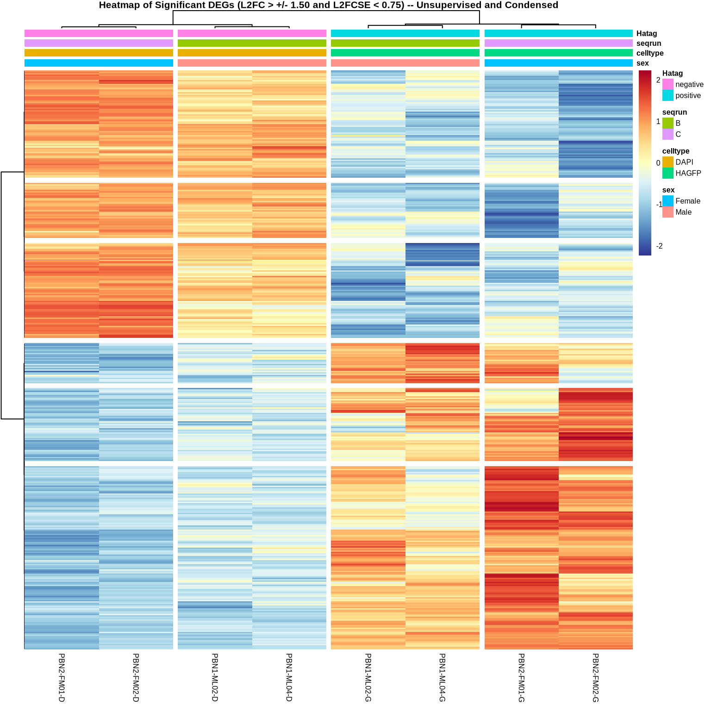
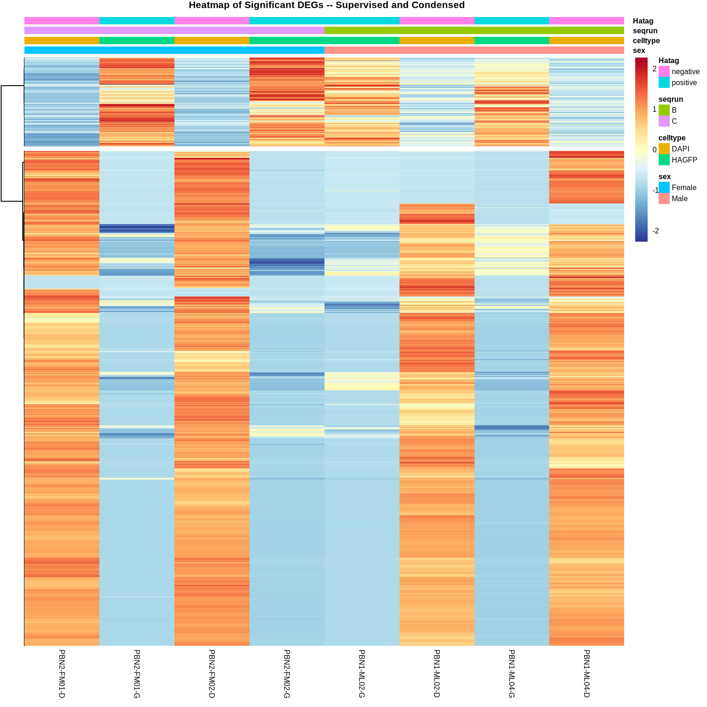
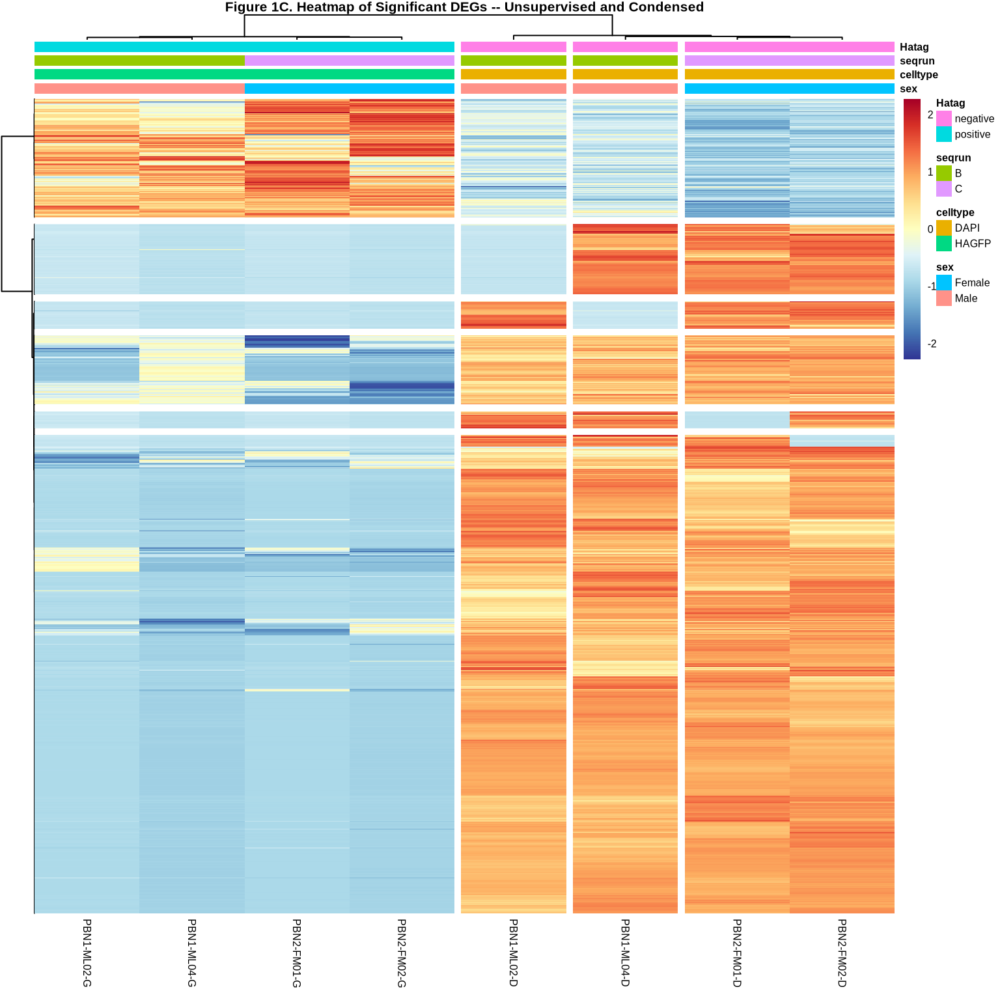
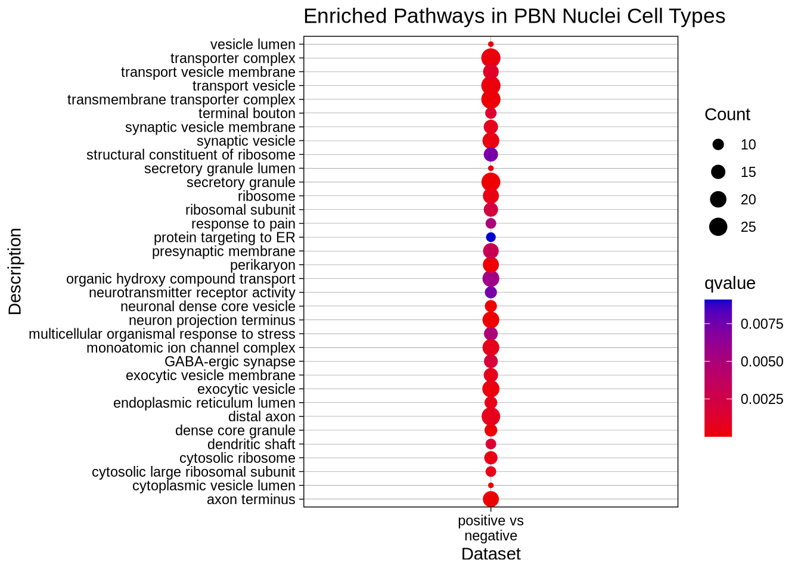
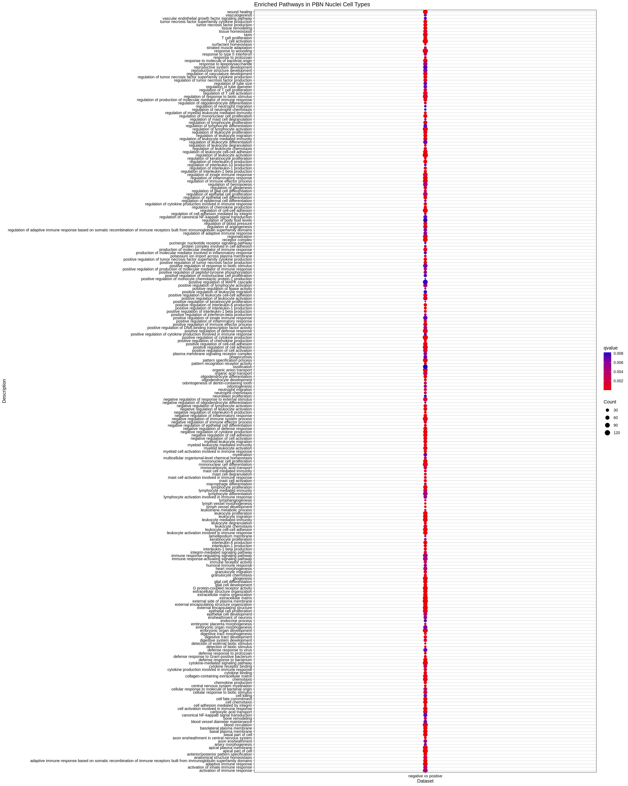
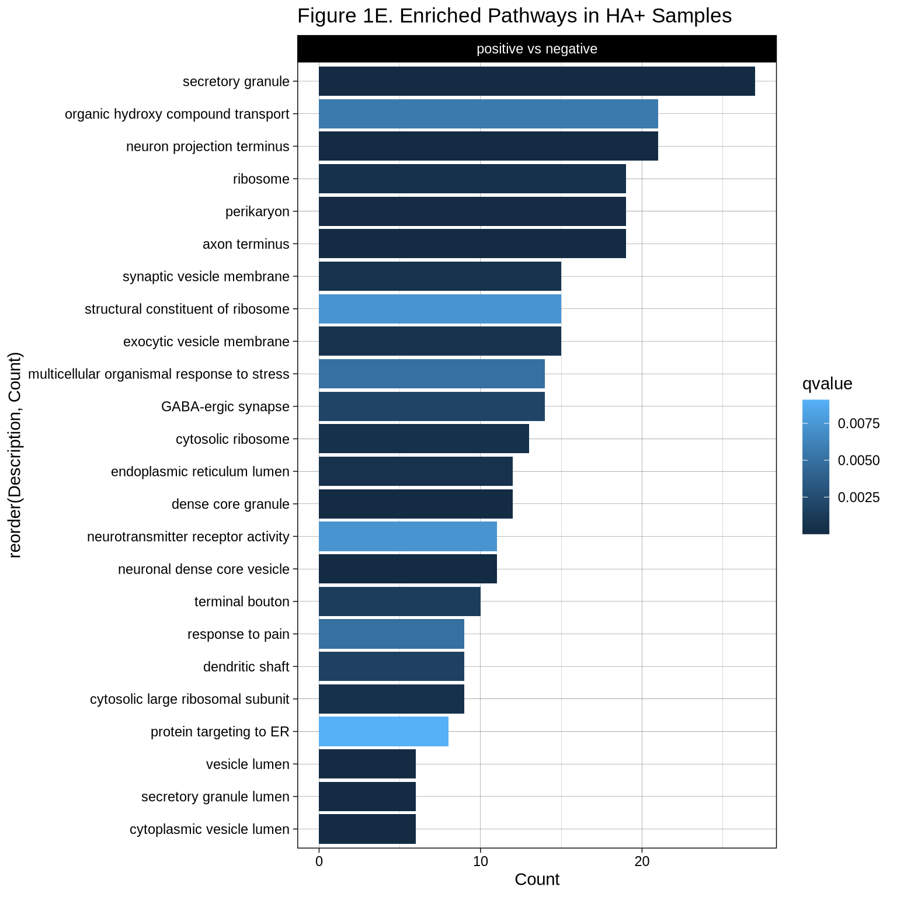
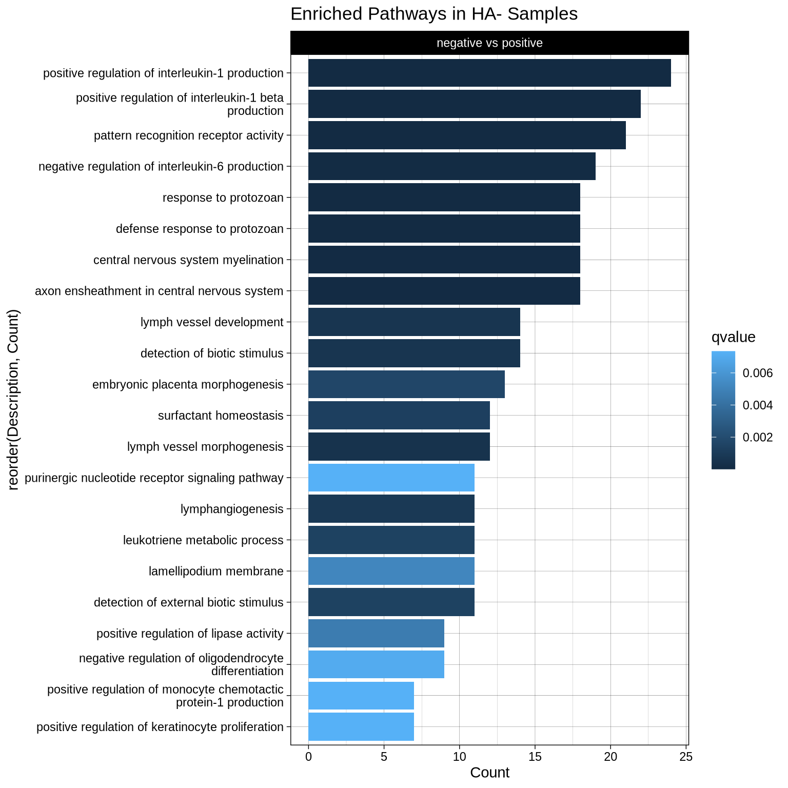

PBN RNAseq DeSeq2 RNA-Sequencing Analysis – By HA
Last updated: 2026-03-05
Checks: 6 1
Knit directory: CGRPReinforcement/
This reproducible R Markdown analysis was created with workflowr (version 1.7.2). The Checks tab describes the reproducibility checks that were applied when the results were created. The Past versions tab lists the development history.
Great! Since the R Markdown file has been committed to the Git repository, you know the exact version of the code that produced these results.
Great job! The global environment was empty. Objects defined in the global environment can affect the analysis in your R Markdown file in unknown ways. For reproduciblity it’s best to always run the code in an empty environment.
The command set.seed(20260305) was run prior to running
the code in the R Markdown file. Setting a seed ensures that any results
that rely on randomness, e.g. subsampling or permutations, are
reproducible.
Great job! Recording the operating system, R version, and package versions is critical for reproducibility.
Nice! There were no cached chunks for this analysis, so you can be confident that you successfully produced the results during this run.
Using absolute paths to the files within your workflowr project makes it difficult for you and others to run your code on a different machine. Change the absolute path(s) below to the suggested relative path(s) to make your code more reproducible.
| absolute | relative |
|---|---|
| ~/Documents/GitHubRepos/CGRPReinforcement/ | . |
Great! You are using Git for version control. Tracking code development and connecting the code version to the results is critical for reproducibility.
The results in this page were generated with repository version 68203ab. See the Past versions tab to see a history of the changes made to the R Markdown and HTML files.
Note that you need to be careful to ensure that all relevant files for
the analysis have been committed to Git prior to generating the results
(you can use wflow_publish or
wflow_git_commit). workflowr only checks the R Markdown
file, but you know if there are other scripts or data files that it
depends on. Below is the status of the Git repository when the results
were generated:
Ignored files:
Ignored: .Rproj.user/
Untracked files:
Untracked: analysis/index2.Rmd
Untracked: analysis/index3.Rmd
Untracked: data/gene_count_matrix_LT19_PBN2_LT15_Merged.csv
Untracked: data/sample_info_ComparativeAnalysis_CombineCellType.csv
Untracked: data/sample_info_PBN_CGRP.csv
Untracked: data/sample_info_PBN_DG_Exclusions.csv
Untracked: output/CGRPEnrichedGeneSet.csv
Untracked: output/FIgure1B_PCA_byHATag.pdf
Untracked: output/Figure1C_Heatmap.pdf
Untracked: output/Figure1D_VolcanoPlot.pdf
Untracked: output/Figure1E_GOHA.pdf
Untracked: output/Figure1F_GOHA.pdf
Untracked: output/Figure2A_PCA_byCellTypeSpecific.pdf
Untracked: output/Figure2B_Heatmap_Unsupervised_Condensed.pdf
Untracked: output/Figure2C_GOCGRP_CellTypes.pdf
Untracked: output/PBNRNASeq_CellType_GODetails.csv
Untracked: output/SFig2D_GO_SexSpecific.pdf
Untracked: output/SFig2E_GO_SexSpecific.pdf
Untracked: output/SFigure2A_PCA_bySex.pdf
Untracked: output/SFigure2B_Heatmap_Unsupervised_Condensed.pdf
Untracked: output/SigDEGs_PBNRNAseq_byCellType_CGRPvsnonCGRP.csv
Untracked: output/SigDEGs_PBNRNAseq_byCellType_ExcitatoryvsCGRP.csv
Untracked: output/SigDEGs_PBNRNAseq_byCellType_PBNvsCGRP.csv
Untracked: output/SigDEGs_PBNRNAseq_byCellType_PVvsCGRP.csv
Untracked: output/SigDEGs_PBNRNAseq_byCellType_VIPvsCGRP.csv
Untracked: output/SigDEGs_PBNRNAseq_byCellType_mDAvsCGRP.csv
Untracked: output/SigDEGs_PBNRNAseq_byHATag.csv
Untracked: output/SigDEGs_PBNRNAseq_bySex.csv
Untracked: renv.lock
Untracked: renv/
Unstaged changes:
Modified: .Rprofile
Modified: CGRPReinforcement.Rproj
Modified: README.md
Modified: analysis/_site.yml
Note that any generated files, e.g. HTML, png, CSS, etc., are not included in this status report because it is ok for generated content to have uncommitted changes.
These are the previous versions of the repository in which changes were
made to the R Markdown (analysis/index.Rmd) and HTML
(docs/index.html) files. If you’ve configured a remote Git
repository (see ?wflow_git_remote), click on the hyperlinks
in the table below to view the files as they were in that past version.
| File | Version | Author | Date | Message |
|---|---|---|---|---|
| Rmd | 68203ab | avm27 | 2026-03-05 | Publish initial analysis |
| Rmd | 3658d72 | avm27 | 2026-03-05 | Start workflowr project. |
1 Experiment Information
2 Abstract
Opioid use disorder (OUD) is a chronic, relapsing disease driven by the reinforcing properties of opioids and perpetuated by avoidance of the negative affective states associated with withdrawal. While available OUD pharmacotherapies can be effective, there is an urgent need to identify novel therapeutic targets. One potential target is calcitonin gene-related peptide (CGRP). CGRP is a neuropeptide produced by a small population of neurons in the parabrachial nucleus (CGRPPBN). In this study, we use a virally mediated cell-specific isolation approach in combination with nuclear RNA-sequencing to establish the baseline transcriptome of CGRPPBN neurons in mice. Multiple genes related to appetite were highly enriched in CGRPPBN neurons, consistent with previous literature on the behavioral role of these neurons. Interestingly, CGRPPBN neurons also highly express the µ-opioid receptor, suggesting these neurons may be involved in opioid reinforcement. To this end, we show that CGRPPBN neurons are sensitive to morphine administration and withdrawal based on cFos staining, suggesting that this population may play a role in regulating the appetitive aspects of opioid taking. To test this hypothesis, we employed a dose-response model of morphine intravenous self-administration (IVSA) in mice, in which DREADD-mediated inhibition of CGRPPBN neurons decreased morphine intake at multiple morphine doses, but did not affect morphine tolerance or context-induced morphine seeking following prolonged abstinence. These data suggest CGRPPBN neurons play an important role in morphine reinforcement, possibly via appetitive control, and may therefore serve as a novel therapeutic target for OUD.
3 DESeq2 Analysis
DESeq2 is used for Differential Gene Expression Analyses
3.1 Data Setup
Building DESeq2 input files from gene count matrices output by String Tie.
3.2 Running DeSeq2 analysis with factor levels of HA tag
colData$Hatag <- factor(colData$Hatag)
dds <- DESeqDataSetFromMatrix(countData = countData, colData = colData, design = ~Hatag)
## Filter out counts less than 50 across the rows
## This helps to remove noise from the data set
keep <- rowSums(counts(dds)) >= 50
dds <- dds[keep,]
## Re-level Conditions to analyze against HA-
dds$Hatag <- relevel(dds$Hatag, ref = "negative")
dds <- DESeq(dds)
#resultsNames(dds)
plotDispEsts(dds)
3.3 Plot Estimates and Gather Results
These results include overview for each result file and dispersion estimates based on count values
3.3.1 Dispersion Estimates HA+ vs HA- based on count values
| baseMean | log2FoldChange | lfcSE | stat | pvalue | padj | |
|---|---|---|---|---|---|---|
| Sox17|Sox17 | 50.74047 | -9.2398773 | 1.3429952 | -6.8800522 | 0.0000000 | 0.0000000 |
| Mrpl15|Mrpl15 | 2095.79829 | 0.5827227 | 0.4037007 | 1.4434521 | 0.1488932 | 0.3713286 |
| Xkr4|Xkr4 | 2905.52125 | 1.1453827 | 0.6097183 | 1.8785439 | 0.0603068 | 0.1874502 |
| Gm39585|Gm39585 | 4612.42435 | -0.0895158 | 0.6114744 | -0.1463933 | 0.8836109 | 0.9644100 |
| Lypla1|Lypla1 | 601.08522 | -1.4034968 | 1.6619199 | -0.8445033 | 0.3983882 | 0.6892555 |
| Gm39587|Gm39587 | 19.93523 | -0.7457855 | 2.4610603 | -0.3030342 | NA | NA |
| Tcea1|Tcea1 | 1911.73133 | 0.2009873 | 0.3311407 | 0.6069543 | 0.5438812 | 0.8031548 |
| Rgs20|Rgs20 | 454.68567 | 0.3792188 | 2.0687663 | 0.1833068 | 0.8545573 | 0.9545752 |
| Gm16041|Gm16041 | 22.38130 | -8.0578447 | 2.5476262 | -3.1628834 | 0.0015621 | 0.0096448 |
| Npbwr1|Npbwr1 | 195.32997 | 0.2485251 | 2.5843022 | 0.0961672 | NA | NA |
| Oprk1|Oprk1 | 2384.29659 | 1.8627289 | 0.7301937 | 2.5510066 | 0.0107412 | 0.0491070 |
| Atp6v1h|Atp6v1h | 8560.19785 | 1.0508409 | 0.4349293 | 2.4161192 | 0.0156869 | 0.0671076 |
| Rb1cc1|Rb1cc1 | 9259.66214 | 0.2828614 | 0.2986428 | 0.9471562 | 0.3435592 | 0.6351192 |
| 4732440D04Rik|4732440D04Rik | 2752.04687 | 0.3227034 | 0.3507655 | 0.9199976 | 0.3575740 | 0.6512980 |
| Gm26901|Gm26901 | 129.95380 | 1.6722345 | 1.9613442 | 0.8525961 | 0.3938833 | 0.6852212 |
| St18|St18 | 3408.39429 | -4.5023870 | 1.5658584 | -2.8753476 | 0.0040358 | 0.0219104 |
| Pcmtd1|Pcmtd1 | 4931.09139 | 0.1274742 | 0.2272803 | 0.5608678 | 0.5748877 | 0.8247054 |
| Rrs1|Rrs1 | 605.08077 | 0.4357899 | 2.0749952 | 0.2100197 | 0.8336523 | 0.9489364 |
| Adhfe1|Adhfe1 | 231.87214 | -2.1608819 | 1.9994655 | -1.0807298 | 0.2798173 | 0.5607704 |
| 2610203C22Rik|2610203C22Rik | 27.49377 | -8.3524991 | 1.6854486 | -4.9556535 | 0.0000007 | 0.0000074 |
out of 20553 with nonzero total read count adjusted p-value < 0.1 LFC > 0 (up) : 823, 4% LFC < 0 (down) : 3941, 19% outliers [1] : 2284, 11% low counts [2] : 0, 0% (mean count < 4) [1] see ‘cooksCutoff’ argument of ?results [2] see ‘independentFiltering’ argument of ?results
3.4 Significant DEGs By Comparison
This subsection is for annotation the results files to include all necessary information for downstream analyses. This is due to the use of StringTie to generate count matrices with the specific mm10 annotation files that we use. Other methods will probably not require this, but our gene names are split by the “|” delimiter and must be separated in order to accurately generate the required Gene Symbols for mapping to entrez, ensemble and descriptions from Org.mm.eg.db.
After annotation we subset the results to only view the significantly differentially expressed genes with an adjusted p-value > 0.05.
results_sig1 <- subset(res1, padj < 0.05)
kable((head(results_sig1, 20)), caption = "Significant DEGs HA+ vs HA-", format = "html", align = "l", booktabs = TRUE) %>%
kable_styling(html_font = "Arial", font_size = 10, bootstrap_options = c("striped", "hover", "condensed", "responsive")) %>%
scroll_box(width = "1000px", height = "500px")| baseMean | log2FoldChange | lfcSE | stat | pvalue | padj | symbol | description | entrez | ensembl | |
|---|---|---|---|---|---|---|---|---|---|---|
| Sox17|Sox17 | 50.740465 | -9.239877 | 1.3429952 | -6.880052 | 0.0000000 | 0.0000000 | Sox17 | SRY (sex determining region Y)-box 17 | 20671 | ENSMUSG0…. |
| Gm16041|Gm16041 | 22.381304 | -8.057845 | 2.5476262 | -3.162883 | 0.0015621 | 0.0096448 | Gm16041 | predicted gene 16041 | 102631647 | ENSMUSG0…. |
| Oprk1|Oprk1 | 2384.296585 | 1.862729 | 0.7301937 | 2.551007 | 0.0107412 | 0.0491070 | Oprk1 | opioid receptor, kappa 1 | 18387 | ENSMUSG0…. |
| St18|St18 | 3408.394289 | -4.502387 | 1.5658584 | -2.875348 | 0.0040358 | 0.0219104 | St18 | suppression of tumorigenicity 18 | 240690 | ENSMUSG0…. |
| 2610203C22Rik|2610203C22Rik | 27.493775 | -8.352499 | 1.6854486 | -4.955654 | 0.0000007 | 0.0000074 | 2610203C22Rik | RIKEN cDNA 2610203C22 gene | 72481 | NA |
| 3110035E14Rik|3110035E14Rik | 213.943440 | -3.711368 | 1.1174911 | -3.321161 | 0.0008964 | 0.0058573 | 3110035E14Rik | NA | NA | |
| Sntg1|Sntg1 | 1431.194771 | 1.674087 | 0.5475340 | 3.057504 | 0.0022319 | 0.0131913 | Sntg1 | syntrophin, gamma 1 | 71096 | ENSMUSG0…. |
| Ppp1r42|Ppp1r42 | 26.798632 | -8.318064 | 1.4247478 | -5.838271 | 0.0000000 | 0.0000001 | Ppp1r42 | protein phosphatase 1, regulatory subunit 42 | 69312 | ENSMUSG0…. |
| A830018L16Rik|A830018L16Rik | 1785.578516 | 1.447947 | 0.5239685 | 2.763424 | 0.0057198 | 0.0293528 | A830018L16Rik | RIKEN cDNA A830018L16 gene | 320492 | ENSMUSG0…. |
| LOC102634042|LOC102634042 | 9.091327 | -6.756521 | 1.4485078 | -4.664470 | 0.0000031 | 0.0000296 | LOC102634042 | NA | NA | |
| LOC108167615|LOC108167615 | 29.396291 | -8.451662 | 2.5454735 | -3.320271 | 0.0008993 | 0.0058718 | LOC108167615 | NA | NA | |
| Jph1|Jph1 | 942.083657 | -13.453808 | 1.1416117 | -11.784925 | 0.0000000 | 0.0000000 | Jph1 | junctophilin 1 | 57339 | ENSMUSG0…. |
| Tfap2b|Tfap2b | 2200.095345 | 2.107093 | 0.5158304 | 4.084855 | 0.0000441 | 0.0003587 | Tfap2b | transcription factor AP-2 beta | 21419 | ENSMUSG0…. |
| Mcm3|Mcm3 | 31.577450 | -8.552193 | 1.5905268 | -5.376956 | 0.0000001 | 0.0000009 | Mcm3 | minichromosome maintenance complex component 3 | 17215 | ENSMUSG0…. |
| Paqr8|Paqr8 | 5094.588531 | -2.172983 | 0.4954372 | -4.385991 | 0.0000115 | 0.0001013 | Paqr8 | progestin and adipoQ receptor family member VIII | 74229 | ENSMUSG0…. |
| Gm28836|Gm28836 | 14.054043 | -7.383142 | 1.4989716 | -4.925472 | 0.0000008 | 0.0000086 | Gm28836 | predicted gene 28836 | 102635593 | NA |
| Gm32947|Gm32947 | 19.754440 | -4.907772 | 1.4689611 | -3.340982 | 0.0008348 | 0.0054901 | Gm32947 | predicted gene, 32947 | 102635667 | NA |
| Sdhaf4|Sdhaf4 | 533.608076 | 1.287222 | 0.3207262 | 4.013462 | 0.0000598 | 0.0004786 | Sdhaf4 | succinate dehydrogenase complex assembly factor 4 | 68002 | ENSMUSG0…. |
| Col9a1|Col9a1 | 59.420313 | -9.466800 | 2.4813519 | -3.815178 | 0.0001361 | 0.0010342 | Col9a1 | collagen, type IX, alpha 1 | 12839 | ENSMUSG0…. |
| Gm597|Gm597 | 28.663229 | -8.413873 | 1.5777122 | -5.332958 | 0.0000001 | 0.0000011 | Gm597 | NA | NA |
3.5 Visualizing Differentially Expressed Genes
3.5.1 Principal Components Analysis (Figure 1B)
For visualization I am converting all analyses to logarithmic. Following this I have completed a PCA based on the top 500 genes.
#rlog transformation of dds for visualization
ddsMat_rlog <- rlog(dds, blind = FALSE)
# Plot PCA by column variable (dds)
pcaData2 <- plotPCA(ddsMat_rlog, intgroup = "Hatag", returnData = TRUE)
pcaData2$Hatag <- factor(pcaData2$Hatag, levels = c("negative", "positive"))
percentVar2 <- round(100 * attr(pcaData2, "percentVar"))
## you only need the following line but the rest is additional formatting
pca <- ggplot(pcaData2, aes(PC1, PC2, color=Hatag, label = colnames(dds))) +
theme_bw() + # remove default ggplot2 theme
geom_point(size = 2) + # Increase point size
scale_y_continuous(limits = c(-125, 125)) +# change limits to fix figure dimensions
scale_x_continuous(limits = c(-125, 125)) +# change limits to fix figure dimensions
xlab(paste0("PC1: ",percentVar2[1],"% variance")) +
ylab(paste0("PC2: ",percentVar2[2],"% variance")) +
ggrepel::geom_label_repel(box.padding = 0.5, max.overlaps = Inf) +
coord_fixed() +
#scale_color_manual(values = custom_colors) + # Set custom colors
ggtitle(label = "Figure 1B. Principal Component Analysis (PCA)",
subtitle = "Top 500 Most Variable Genes (rlog transformed)")
pca
png
2 3.5.2 Heatmaps of Significantly Differentially Expressed Genes
To generate the heatmaps we use two methods, the first utilizes all differential expressed genes based on a specified cut-off. In our case we select for any significant DEGs with a L2FC > 1.5 or an L2FC < -1.5 with a L2FC Standard Error < 0.75. We then plot these using a wards D correlation clustering method and generate both supervised and unsupervised clusters (by group). Rows are scaled based on a correlation z-score. The second method is less stringent and utilizes all significant DEGs, without filtering.
3.5.2.1 Highly Significiant
Cut-Off of L2FC > 1.5 or an L2FC < -1.5 with a L2FC Standard Error < 0.75
3.5.2.1.1 Supervised and Condensed Highly Significant DEGs (L2FC > +/- 1.50 and L2FCSE < 0.75).

3.5.2.1.2 Unsupervised and Condensed Highly Significant DEGs (L2FC > +/- 1.50 and L2FCSE < 0.75)

3.5.2.2 All DEGs
3.5.2.2.1 Supervised and Condensed All DEGs

3.5.2.2.2 Unsupervised and Condensed All DEGs

3.5.3 Volcano Plots
3.5.3.1 Volcano Plots (noninteractive)
# Gather Log-fold change and FDR-corrected pvalues from DESeq2 results
# Change pvalues to -log10 (1.3 = 0.05)
data <- data.frame(
gene = (res1$symbol),
pval = -log10(res1$padj),
lfc = res1$log2FoldChange
)
# Remove any rows that have NA as an entry
data <- na.omit(data)
# Color the points which are up or down
## If fold-change > 0 and pvalue > 1.3 (Increased significant)
## If fold-change < 0 and pvalue > 1.3 (Decreased significant)
data <- dplyr::mutate(data, color = case_when(
data$lfc > 0 & data$pval > 1.3 ~ "Increased in HA+",
data$lfc < 0 & data$pval > 1.3 ~ "Decreased in HA+",
data$pval < 1.3 ~ "Nonsignificant"
))
data$genelabels <- ifelse(data$gene == "Adamts4"
| data$gene == "Fa2h"
| data$gene == "Tmem63a"
| data$gene == "Klk6"
| data$gene == "Gal"
| data$gene == "Chodl"
| data$gene == "Calca"
| data$gene == "Isl1"
| data$gene == "Uts2b"
| data$gene == "Glul"
| data$gene == "Slc17a6"
| data$gene == "Scg2", T, F)
# Make a basic ggplot2 object with x-y values
vol <- ggplot(data, aes(x = lfc, y = pval, color = color))
# Add ggplot2 layers
y.axis.text <- element_text(face = "bold", color = "black", size = 7)
x.axis.text <- element_text(face = "bold", color = "black", size = 7)
plot.title.text <- element_text(face = "bold", color = "black", size = 9, hjust = 0.5)
legend.text <- element_text(face = "bold", color = "black", size = 5)
legend.title.text <- element_text(face = "bold", color = "black", size = 6)
axis.title <- element_text(face = "bold", color = "black", size = 6)vol_final <- vol +
ggtitle(label = "Figure 1D. HA+ vs HA-") +
geom_point(size = 1.5, alpha = 0.8, na.rm = T) +
scale_color_manual(
name = "Directionality",
values = c("Increased in HA+" = "#008B00", "Decreased in HA+" = "#CD4F39", "Nonsignificant" = "darkgray")
) +
theme_bw(base_size = 14) + # change overall theme+
theme(
legend.position = "right",
axis.text.y = y.axis.text,
axis.text.x = x.axis.text,
axis.title = axis.title,
plot.title = plot.title.text,
legend.text = legend.text,
legend.title = legend.title.text,
legend.key.size = unit(0.5, "cm"), # change legend key size
legend.key.height = unit(0.5, "cm"), # change legend key height
legend.key.width = unit(0.5, "cm")
) + # change legend key width
xlab(expression(log[2]("Fold Change"))) + # Change X-Axis label
ylab(expression(-log[10]("adjusted p-value"))) + # Change Y-Axis label
geom_hline(yintercept = 1.3, colour = "darkgrey") + # Add p-adj value cutoff line
scale_y_continuous(trans = "log1p") + # Scale y-axis due to large p-values
geom_text_repel(aes(lfc,pval),
label = ifelse(data$genelabels == TRUE,
as.character(data$gene),""),
box.padding = unit(1, "lines"),
hjust= 0.30,
max.overlaps = Inf)
vol_final
4 Gene Ontology Analysis
To generate GO analysis we first created a background of genes using any genes that met the original DESEQ2 filtering criteria of > 50 genes counts per row and having a mappable Entrez ID. This generates the necessary background to ensure that we are not just detecting background functional pathways as we are utilizing this specific cell type. We then filter our genes that have L2FC < 0 or L2FC > 0 to determine directionality of the affected GO pathways. GO enrich is then used to conduct the pathway analysis utilizing the Entrez IDs as inputs and an “FDR” multiple testing correction.
4.0.1 Pull only the Enriched samples from either side (<-1 or >1 LFC)
[1] 20553[1] 20553background_mm10 <- subset(res1, is.na(entrez) == FALSE)
gene_matrix_background <- unique(sort(background_mm10$entrez))
# Remove any genes that do not have any entrez identifiers
results_sig_entrez <- subset(results_sig1, is.na(entrez) == FALSE)
# Create a matrix of gene log2 fold changes
gene_matrix <- results_sig_entrez$log2FoldChange
# Add the entrezID's as names for each logFC entry
names(gene_matrix) <- results_sig_entrez$entrez
# Pull only the Enriched samples from either side +/- 1 LFC
gene_matrix_enrich <- gene_matrix[which(gene_matrix > 1)]
gene_matrix_enrich2 <- gene_matrix[which(gene_matrix < -1)]
go_enrich1 <- clusterProfiler::enrichGO(gene = names(gene_matrix_enrich),
OrgDb = 'org.Mm.eg.db',
readable = T,
universe = gene_matrix_background,
ont = "ALL",
pAdjustMethod = "fdr",
pvalueCutoff = 0.01,
qvalueCutoff = 0.05)
go_enrich2 <- clusterProfiler::enrichGO(gene = names(gene_matrix_enrich2),
OrgDb = 'org.Mm.eg.db',
readable = T,
universe = gene_matrix_background,
ont = "ALL",
pAdjustMethod = "fdr",
pvalueCutoff = 0.01,
qvalueCutoff = 0.05)
KEGG_enrich1 <- clusterProfiler::enrichKEGG(gene = names(gene_matrix_enrich),
organism = 'mmu',
keyType = "ncbi-geneid",
pvalueCutoff = 0.01,
pAdjustMethod = "fdr",
universe = gene_matrix_background,
qvalueCutoff = 0.05)Reading KEGG annotation online: "https://rest.kegg.jp/link/mmu/pathway"...Reading KEGG annotation online: "https://rest.kegg.jp/list/pathway/mmu"...Reading KEGG annotation online: "https://rest.kegg.jp/conv/ncbi-geneid/mmu"...KEGG_enrich2 <- clusterProfiler::enrichKEGG(gene = names(gene_matrix_enrich2),
organism = 'mmu',
keyType = "ncbi-geneid",
pvalueCutoff = 0.01,
pAdjustMethod = "fdr",
universe = gene_matrix_background,
qvalueCutoff = 0.05)
go_enrich_dataset1 <- as.data.frame(go_enrich1)
go_enrich_dataset2 <- as.data.frame(go_enrich2)
KEGG_enrich_dataset1 <- as.data.frame(KEGG_enrich1)
KEGG_enrich_dataset2 <- as.data.frame(KEGG_enrich2)
go_enrich_dataset1$Dataset <- "positive vs negative"
go_enrich_dataset2$Dataset <- "negative vs positive"
go_enrich_dataset1$Celltype <- "positive"
go_enrich_dataset2$Celltype <- "negative"
go_enrich_dataset1$Comparison <- "negative"
go_enrich_dataset2$Comparison <- "positive"
MergedGO1 <- merge(go_enrich_dataset1, go_enrich_dataset2, all=TRUE)
# Turn your 'Dataset' column into a character vector
MergedGO1$Dataset <- as.character(MergedGO1$Dataset)
# Then turn it back into a factor with the levels in the correct order
MergedGO1$Dataset <- factor(MergedGO1$Dataset, levels = c("positive vs negative", "negative vs positive"))
MergedGO1$Description_title_case <- stringr::str_to_title(MergedGO1$Description)
MergedGO1$GOPathways <- stringr::str_to_title(MergedGO1$Description_title_case)
MergedGO1$GOPathways <- stringr::str_wrap(MergedGO1$GOPathways, width = 10)
#S1 <- ggplot(MergedGO1, aes(x = Dataset, y = Description, size = Count, color = qvalue, group = Dataset)) +
# geom_point(alpha = 1) +
# theme_linedraw() + # change legend key width
# scale_x_discrete(labels = function(x) stringr::str_wrap(x, width = 15)) +
# scale_y_discrete(labels = function(x) stringr::str_wrap(x, width = 50)) +
# ggtitle("Enriched Pathways in PBN Nuclei Cell Types")
#facet_grid(~Region+Comparison2, scales = "free_x")
#S2 <- S1 + scale_color_gradient(low = "red2", high = "mediumblue", space = "Lab") + scale_size(range = c(5, 10))
#S24.0.1.1 HA Positive Only
## Only CGRP (positive)
GO1 <- go_enrich_dataset1
# Turn your 'Dataset' column into a character vector
GO1$Dataset <- as.character(GO1$Dataset)
# Then turn it back into a factor with the levels in the correct order
GO1$Dataset <- factor(GO1$Dataset, levels = c("positive vs negative"))
GO1$Description_title_case <- stringr::str_to_title(GO1$Description)
GO1$GOPathways <- stringr::str_to_title(GO1$Description_title_case)
GO1$GOPathways <- stringr::str_wrap(GO1$GOPathways, width = 10)
S1 <- ggplot(GO1, aes(x = Dataset, y = Description, size = Count, color = qvalue, group = Dataset)) +
geom_point(alpha = 1) +
theme_linedraw() + # change legend key width
scale_x_discrete(labels = function(x) stringr::str_wrap(x, width = 15)) +
scale_y_discrete(labels = function(x) stringr::str_wrap(x, width = 50)) +
ggtitle("Enriched Pathways in PBN Nuclei Cell Types")
#facet_grid(~Region+Comparison2, scales = "free_x")
S2 <- S1 + scale_color_gradient(low = "red2", high = "mediumblue", space = "Lab") + scale_size(range = c(1, 5))
S2
4.0.1.2 HA Negative Only
## Only DAPI (negative)
GO2 <- go_enrich_dataset2
# Turn your 'Dataset' column into a character vector
GO2$Dataset <- as.character(GO2$Dataset)
# Then turn it back into a factor with the levels in the correct order
GO2$Dataset <- factor(GO2$Dataset, levels = c("negative vs positive"))
GO2$Description_title_case <- stringr::str_to_title(GO2$Description)
GO2$GOPathways <- stringr::str_to_title(GO2$Description_title_case)
GO2$GOPathways <- stringr::str_wrap(GO2$GOPathways, width = 10)
S1 <- ggplot(GO2, aes(x = Dataset, y = Description, size = Count, color = qvalue, group = Dataset)) +
geom_point(alpha = 1) +
theme_linedraw() + # change legend key width
scale_x_discrete(labels = function(x) stringr::str_wrap(x, width = 5000)) +
scale_y_discrete(labels = function(x) stringr::str_wrap(x, width = 5000)) +
ggtitle("Enriched Pathways in PBN Nuclei Cell Types")
#facet_grid(~Region+Comparison2, scales = "free_x")
S2 <- S1 + scale_color_gradient(low = "red2", high = "mediumblue", space = "Lab") + scale_size(range = c(1, 5))
S2
4.0.2 Set the Fold Enrichment for most important pathways
go_filtered1 <- go_enrich_dataset1 %>%
filter(FoldEnrichment >= 3)
go_filtered2 <- go_enrich_dataset2 %>%
filter(FoldEnrichment >= 3)
go_filtered1$Dataset <- "positive vs negative"
go_filtered2$Dataset <- "negative vs positive"
go_filtered1$Celltype <- "positive"
go_filtered2$Celltype <- "negative"
go_filtered1$Comparison <- "negative"
go_filtered2$Comparison <- "positive"4.0.2.1 HA Positive Only
GO1_filtered <- go_filtered1
# Turn your 'Dataset' column into a character vector
GO1_filtered$Dataset <- as.character(GO1_filtered$Dataset)
# Then turn it back into a factor with the levels in the correct order
GO1_filtered$Dataset <- factor(GO1_filtered$Dataset, levels = c("positive vs negative"))
GO1_filtered$Description_title_case <- stringr::str_to_title(GO1_filtered$Description)
GO1_filtered$GOPathways <- stringr::str_to_title(GO1_filtered$Description_title_case)
GO1_filtered$GOPathways <- stringr::str_wrap(GO1_filtered$GOPathways, width = 10)
S1 <- ggplot(GO1_filtered, aes(x = Count, y = reorder(Description, Count), fill = qvalue)) +
geom_col(alpha = 1) +
facet_wrap(~Dataset, scales = "free_y") +
theme_linedraw() + # change legend key width
scale_y_discrete(labels = function(x) stringr::str_wrap(x, width = 50)) +
ggtitle("Figure 1E. Enriched Pathways in HA+ Samples")
S2 <- S1 + scale_color_gradient(low = "red2", high = "mediumblue", space = "Lab") + scale_size(range = c(5, 10))
S2
4.0.2.2 HA Negative Only
GO2_filtered <- go_filtered2
# Turn your 'Dataset' column into a character vector
GO2_filtered$Dataset <- as.character(GO2_filtered$Dataset)
# Then turn it back into a factor with the levels in the correct order
GO2_filtered$Dataset <- factor(GO2_filtered$Dataset, levels = c("negative vs positive"))
GO2_filtered$Description_title_case <- stringr::str_to_title(GO2_filtered$Description)
GO2_filtered$GOPathways <- stringr::str_to_title(GO2_filtered$Description_title_case)
GO2_filtered$GOPathways <- stringr::str_wrap(GO2_filtered$GOPathways, width = 10)
S1 <- ggplot(GO2_filtered, aes(x = Count, y = reorder(Description, Count), fill = qvalue)) +
geom_col(alpha = 1) +
facet_wrap(~Dataset, scales = "free_y") +
theme_linedraw() + # change legend key width
scale_y_discrete(labels = function(x) stringr::str_wrap(x, width = 50)) +
ggtitle("Enriched Pathways in HA- Samples")
S2 <- S1 + scale_color_gradient(low = "red2", high = "mediumblue", space = "Lab") + scale_size(range = c(5, 10))
S2
R version 4.5.2 (2025-10-31)
Platform: x86_64-conda-linux-gnu
Running under: Ubuntu 22.04.5 LTS
Matrix products: default
BLAS/LAPACK: /home/avm27/anaconda3/envs/workflowr_env/lib/libopenblasp-r0.3.30.so; LAPACK version 3.12.0
locale:
[1] LC_CTYPE=en_US.UTF-8 LC_NUMERIC=C
[3] LC_TIME=en_US.UTF-8 LC_COLLATE=en_US.UTF-8
[5] LC_MONETARY=en_US.UTF-8 LC_MESSAGES=en_US.UTF-8
[7] LC_PAPER=en_US.UTF-8 LC_NAME=C
[9] LC_ADDRESS=C LC_TELEPHONE=C
[11] LC_MEASUREMENT=en_US.UTF-8 LC_IDENTIFICATION=C
time zone: America/New_York
tzcode source: system (glibc)
attached base packages:
[1] stats4 stats graphics grDevices datasets utils methods
[8] base
other attached packages:
[1] DOSE_4.2.0 vidger_1.28.0
[3] org.Mm.eg.db_3.21.0 AnnotationDbi_1.70.0
[5] clusterProfiler_4.16.0 DESeq2_1.48.2
[7] SummarizedExperiment_1.38.1 Biobase_2.68.0
[9] MatrixGenerics_1.20.0 matrixStats_1.5.0
[11] GenomicRanges_1.60.0 GenomeInfoDb_1.44.3
[13] IRanges_2.42.0 S4Vectors_0.46.0
[15] BiocGenerics_0.54.1 generics_0.1.4
[17] knitr_1.51 RColorBrewer_1.1-3
[19] pheatmap_1.0.13 kableExtra_1.4.0
[21] plotly_4.12.0 ggrepel_0.9.7
[23] gridExtra_2.3 reshape2_1.4.5
[25] lubridate_1.9.5 forcats_1.0.1
[27] stringr_1.6.0 dplyr_1.2.0
[29] purrr_1.2.1 readr_2.2.0
[31] tidyr_1.3.2 tibble_3.3.1
[33] ggplot2_4.0.2 tidyverse_2.0.0
[35] workflowr_1.7.2
loaded via a namespace (and not attached):
[1] rstudioapi_0.18.0 jsonlite_2.0.0 magrittr_2.0.4
[4] ggtangle_0.1.1 farver_2.1.2 rmarkdown_2.30
[7] fs_1.6.6 vctrs_0.7.1 memoise_2.0.1
[10] ggtree_3.16.3 htmltools_0.5.9 S4Arrays_1.8.1
[13] gridGraphics_0.5-1 SparseArray_1.8.1 sass_0.4.10
[16] bslib_0.10.0 htmlwidgets_1.6.4 plyr_1.8.9
[19] cachem_1.1.0 igraph_2.2.2 whisker_0.4.1
[22] lifecycle_1.0.5 pkgconfig_2.0.3 gson_0.1.0
[25] Matrix_1.7-4 R6_2.6.1 fastmap_1.2.0
[28] GenomeInfoDbData_1.2.14 digest_0.6.39 aplot_0.2.9
[31] enrichplot_1.28.4 GGally_2.4.0 patchwork_1.3.2
[34] ps_1.9.1 rprojroot_2.1.1 textshaping_1.0.4
[37] RSQLite_2.4.6 labeling_0.4.3 timechange_0.4.0
[40] httr_1.4.8 abind_1.4-8 compiler_4.5.2
[43] bit64_4.6.0-1 withr_3.0.2 S7_0.2.1
[46] BiocParallel_1.42.2 DBI_1.3.0 ggstats_0.12.0
[49] R.utils_2.13.0 rappdirs_0.3.4 DelayedArray_0.34.1
[52] tools_4.5.2 otel_0.2.0 ape_5.8-1
[55] httpuv_1.6.16 R.oo_1.27.1 glue_1.8.0
[58] callr_3.7.6 nlme_3.1-168 GOSemSim_2.34.0
[61] promises_1.5.0 grid_4.5.2 getPass_0.2-4
[64] fgsea_1.34.2 gtable_0.3.6 tzdb_0.5.0
[67] R.methodsS3_1.8.2 data.table_1.18.2.1 hms_1.1.4
[70] xml2_1.5.2 XVector_0.48.0 pillar_1.11.1
[73] limma_3.64.3 yulab.utils_0.2.4 later_1.4.8
[76] splines_4.5.2 treeio_1.32.0 lattice_0.22-9
[79] renv_1.1.7 bit_4.6.0 tidyselect_1.2.1
[82] GO.db_3.21.0 locfit_1.5-9.12 Biostrings_2.76.0
[85] git2r_0.35.0 edgeR_4.6.3 svglite_2.2.2
[88] xfun_0.56 statmod_1.5.1 stringi_1.8.7
[91] UCSC.utils_1.4.0 ggfun_0.2.0 lazyeval_0.2.2
[94] yaml_2.3.12 evaluate_1.0.5 codetools_0.2-20
[97] qvalue_2.40.0 BiocManager_1.30.27 ggplotify_0.1.3
[100] cli_3.6.5 systemfonts_1.3.1 processx_3.8.6
[103] jquerylib_0.1.4 Rcpp_1.1.1 png_0.1-8
[106] parallel_4.5.2 blob_1.3.0 tidytree_0.4.7
[109] viridisLite_0.4.3 scales_1.4.0 crayon_1.5.3
[112] rlang_1.1.7 cowplot_1.2.0 fastmatch_1.1-8
[115] KEGGREST_1.48.1
R version 4.5.2 (2025-10-31)
Platform: x86_64-conda-linux-gnu
Running under: Ubuntu 22.04.5 LTS
Matrix products: default
BLAS/LAPACK: /home/avm27/anaconda3/envs/workflowr_env/lib/libopenblasp-r0.3.30.so; LAPACK version 3.12.0
locale:
[1] LC_CTYPE=en_US.UTF-8 LC_NUMERIC=C
[3] LC_TIME=en_US.UTF-8 LC_COLLATE=en_US.UTF-8
[5] LC_MONETARY=en_US.UTF-8 LC_MESSAGES=en_US.UTF-8
[7] LC_PAPER=en_US.UTF-8 LC_NAME=C
[9] LC_ADDRESS=C LC_TELEPHONE=C
[11] LC_MEASUREMENT=en_US.UTF-8 LC_IDENTIFICATION=C
time zone: America/New_York
tzcode source: system (glibc)
attached base packages:
[1] stats4 stats graphics grDevices datasets utils methods
[8] base
other attached packages:
[1] DOSE_4.2.0 vidger_1.28.0
[3] org.Mm.eg.db_3.21.0 AnnotationDbi_1.70.0
[5] clusterProfiler_4.16.0 DESeq2_1.48.2
[7] SummarizedExperiment_1.38.1 Biobase_2.68.0
[9] MatrixGenerics_1.20.0 matrixStats_1.5.0
[11] GenomicRanges_1.60.0 GenomeInfoDb_1.44.3
[13] IRanges_2.42.0 S4Vectors_0.46.0
[15] BiocGenerics_0.54.1 generics_0.1.4
[17] knitr_1.51 RColorBrewer_1.1-3
[19] pheatmap_1.0.13 kableExtra_1.4.0
[21] plotly_4.12.0 ggrepel_0.9.7
[23] gridExtra_2.3 reshape2_1.4.5
[25] lubridate_1.9.5 forcats_1.0.1
[27] stringr_1.6.0 dplyr_1.2.0
[29] purrr_1.2.1 readr_2.2.0
[31] tidyr_1.3.2 tibble_3.3.1
[33] ggplot2_4.0.2 tidyverse_2.0.0
[35] workflowr_1.7.2
loaded via a namespace (and not attached):
[1] rstudioapi_0.18.0 jsonlite_2.0.0 magrittr_2.0.4
[4] ggtangle_0.1.1 farver_2.1.2 rmarkdown_2.30
[7] fs_1.6.6 vctrs_0.7.1 memoise_2.0.1
[10] ggtree_3.16.3 htmltools_0.5.9 S4Arrays_1.8.1
[13] gridGraphics_0.5-1 SparseArray_1.8.1 sass_0.4.10
[16] bslib_0.10.0 htmlwidgets_1.6.4 plyr_1.8.9
[19] cachem_1.1.0 igraph_2.2.2 whisker_0.4.1
[22] lifecycle_1.0.5 pkgconfig_2.0.3 gson_0.1.0
[25] Matrix_1.7-4 R6_2.6.1 fastmap_1.2.0
[28] GenomeInfoDbData_1.2.14 digest_0.6.39 aplot_0.2.9
[31] enrichplot_1.28.4 GGally_2.4.0 patchwork_1.3.2
[34] ps_1.9.1 rprojroot_2.1.1 textshaping_1.0.4
[37] RSQLite_2.4.6 labeling_0.4.3 timechange_0.4.0
[40] httr_1.4.8 abind_1.4-8 compiler_4.5.2
[43] bit64_4.6.0-1 withr_3.0.2 S7_0.2.1
[46] BiocParallel_1.42.2 DBI_1.3.0 ggstats_0.12.0
[49] R.utils_2.13.0 rappdirs_0.3.4 DelayedArray_0.34.1
[52] tools_4.5.2 otel_0.2.0 ape_5.8-1
[55] httpuv_1.6.16 R.oo_1.27.1 glue_1.8.0
[58] callr_3.7.6 nlme_3.1-168 GOSemSim_2.34.0
[61] promises_1.5.0 grid_4.5.2 getPass_0.2-4
[64] fgsea_1.34.2 gtable_0.3.6 tzdb_0.5.0
[67] R.methodsS3_1.8.2 data.table_1.18.2.1 hms_1.1.4
[70] xml2_1.5.2 XVector_0.48.0 pillar_1.11.1
[73] limma_3.64.3 yulab.utils_0.2.4 later_1.4.8
[76] splines_4.5.2 treeio_1.32.0 lattice_0.22-9
[79] renv_1.1.7 bit_4.6.0 tidyselect_1.2.1
[82] GO.db_3.21.0 locfit_1.5-9.12 Biostrings_2.76.0
[85] git2r_0.35.0 edgeR_4.6.3 svglite_2.2.2
[88] xfun_0.56 statmod_1.5.1 stringi_1.8.7
[91] UCSC.utils_1.4.0 ggfun_0.2.0 lazyeval_0.2.2
[94] yaml_2.3.12 evaluate_1.0.5 codetools_0.2-20
[97] qvalue_2.40.0 BiocManager_1.30.27 ggplotify_0.1.3
[100] cli_3.6.5 systemfonts_1.3.1 processx_3.8.6
[103] jquerylib_0.1.4 Rcpp_1.1.1 png_0.1-8
[106] parallel_4.5.2 blob_1.3.0 tidytree_0.4.7
[109] viridisLite_0.4.3 scales_1.4.0 crayon_1.5.3
[112] rlang_1.1.7 cowplot_1.2.0 fastmatch_1.1-8
[115] KEGGREST_1.48.1